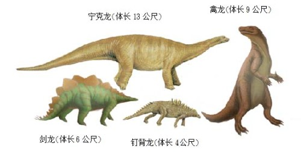
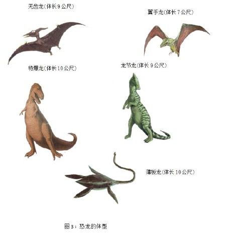

恐龙

图1：理查德·欧文爵士（Richard Owen，1804年7月20日－1892年12月18日）是一位英国生物学家、比较解剖学家与古生物学家。是皇家学会成员，曾对许多脊椎动物进行分类与命名。


恐龙(Dinosaur) 这个名词，最早是由英国解剖古生物学家理查德欧文 (Richard Owen；图1) 在1842 年提出的。他根据希腊前缀deinos (恐布的) 以及字尾sauros (蜥蜴) 所订出的名词。意思是『恐怖的蜥蜴』，牠是陆地上曾经存在最大型的动物。属于爬虫类，开始于2亿3000万年前中生代的三迭纪（约2亿4千8百万到2亿8百万年前，通常所称的恐龙时代，是中生代的第一个时期。），活跃于侏罗纪（约２亿１千万~１亿４千万年前，是中生代的第二个时期，在亚洲针叶树和银杏繁茂。）和白垩纪（约１亿４０００万~６５００万年前是中生代的第三个时期。虽然恐龙不断繁盛，但是在这个时代末期就都灭绝了。）然后在距今6500万年前白垩纪晚期，突然迅速的消失，牠们在地球生活了1亿6000多万年，而我们人类的出现到现在也不只过几百万年而已。牠们的绝减至今仍是一个谜，没有人知道确切的原因。
恐龙在牠们所生活的时代，是地球上最大、最主要的脊惟动物;有陆上走的、天上飞的、水中游的（图2）。足迹遍布全世界，除了南极以外，都曾发现过恐龙的化石。世界上有记载最早发现的恐龙化石，是公元1818年在美国康乃狄克州一个山谷裹所发现的。此外在1820到1822年间，在英国牛津，也曾发现过一些恐龙牙齿和骨头的化石。但是一直等到1825年，这些化石才被认定是一种未曾发现的动物残骸。
后来世界各地又陆续发现了一些恐龙蛋和胚胎的化石，尤以1922年在蒙古戈壁沙漠中所发现的最为完整。这些发现足以证明恐龙是卵生的动物。在分类学上，恐龙属于脊椎动物亚门、爬虫纲中的鸟髋目和蜥髋目。属于鸟髋目的恐龙骨骼类似鸟的骨架，而属于蜥髋目恐龙则和蜥蝪相像。事实上，恐龙和后代的蜥蝪、鳄鱼、鸟类等动物的前身都是近亲。在恐龙1亿6000万岁月里，共约有5000种不同的恐龙，曾经生活在不同的地区，不同的年代。它们并非全部体型都非常庞大，也有小到身长不到60公分的。恐龙可分草食性和肉食性两种，通常草食性的恐龙如雷龙，牙齿都比较细小，体型也比较大，比较笨重，多半以四脚着地，生活在水边的陆地;有些也因为体重太重而生活在沼泽裹，借着浮力使行动较活泼。肉食性恐龙如暴龙，多半比较凶猛。有锐利的牙齿，体型也较轻小，大都以后脚着地行走;因为前肢退化得很小，祇能用来攫掠食物。他们的食物除了其他小动物以外，也吃草食性的恐龙。
恐龙灭种的原因，有待考证，也许因为缺乏食物，由于饥饿而自相残杀;也许因为新生代气候、地形的剧变，使他们难以适应等等。恐龙灭绝以后，哺乳类的急速发展，取替了恐龙的主宰地位。不过这些中生代大爬虫的绝种，却指示了一条非常重要的原理，就是:种的绝灭，在生物的演化上是非常重要的，它可以清除旧种，并替新种铺路。恐龙一直独霸着中生代大部分的陆上生活地区，可走等他们一旦遭到淘汰以后，原先并不得势的哺乳类展开了新领域，进入辉煌时代。
有关恐龙的灭绝有三种说法：
1. 白垩纪是恐龙这个大家族「人丁兴旺」的时期，当时气候温和，陆地上布满着湖沼，可供牠们食用的植物和动物也非常丰盛，牠们过着安安定定的生活，这样生活适应方式和自己身体的构造，在漫长的年代中逐渐定型下来。然而到白垩纪末期，地球上发生了一件大事，那就是地壳上长出许多山来，沼泽也被毁灭了，这么一来，牠就无法适应新环境。首先碰到的是，空气既干且热，牠那仅仅只适于对付湿热空气的呼吸器官，实在无法对付;而由于气候的改变，植物也少了，其在冬季时更成问题，食物起了恐慌。同时，鸟类和哺乳类动物，早已发展起来，牠们的脑子机灵，动作敏捷，又是温血动物，便于适应周围气候变化。这对体躯粗重、行动迟缓而脑子又不发达恐龙，无论在抢夺食物等方面，决非鸟类和哺乳类的敌手，在这场激烈的生存斗争中，牠当然是注定失败的。以上这些原因，就促使恐龙这一家族绝灭了。
2. 长久以来，人们常以为恐龙的灭绝是因为牠们行动缓慢和适应力差。但其实恐龙是相当敏捷，和具有发育相当好的脑。因此有人认为恐龙的灭绝，应与气候不好有关，遇到地球发生大规模灾难性的变化所导致的。
3. 最近另一种说法是因为巨大陨石撞到地球表面后，恐龙大量死亡，残存恐龙也耐不了陨石撞到地球后，气候骤然变成酷寒，也相继死亡。
以上三点皆存在一个共同点，就是气候变迁，恐龙无法渡过寒冬（图2）。
图2：恐龙在陨石撞到地球后，气候骤然变成酷寒，相继死亡。